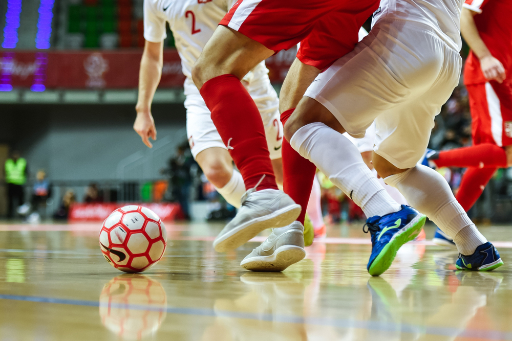

ประโยชน์ของการเล่นฟุตซอล
การเล่นฟุตซอลมีประโยชน์หลายด้าน ทั้งทางร่างกายและจิตใจ รวมทั้งพัฒนาทักษะเฉพาะที่นำไปใช้ในกีฬาฟุตบอล
พัฒนาความคล่องตัวและความเร็ว
การเล่นในสนามเล็กและพื้นที่จำกัดช่วยฝึกให้ผู้เล่นเคลื่อนที่เร็ว ปรับตัวได้ทันทีในสถานการณ์ต่างๆ
ฝึกการตัดสินใจอย่างรวดเร็ว
เกมที่รวดเร็วบังคับให้ผู้เล่นต้องคิดและตัดสินใจในเสี้ยววินาที ทำให้สมองทำงานได้ไวขึ้น
ส่งเสริมสุขภาพและความแข็งแรงของร่างกาย
การวิ่งและเคลื่อนไหวในเกมช่วยเสริมสร้างระบบหัวใจและหลอดเลือด รวมถึงกล้ามเนื้อหลายส่วน
พัฒนาทักษะการควบคุมบอลและเทคนิคเฉพาะตัว
ผู้เล่นได้ฝึกเลี้ยงบอล ส่งบอล และยิงในพื้นที่แคบ ซึ่งเป็นทักษะที่นำไปใช้กับฟุตบอลสนามใหญ่ได้
สร้างความสามัคคีและความเป็นทีม
ฟุตซอลต้องการการประสานงานและความเข้าใจระหว่างผู้เล่น ส่งเสริมให้เกิดมิตรภาพและความร่วมมือ
ช่วยลดความเครียดและเพิ่มความสนุกสนาน
การเล่นกีฬาสร้างความสุข ลดความเครียด และส่งเสริมสุขภาพจิตที่ดี
